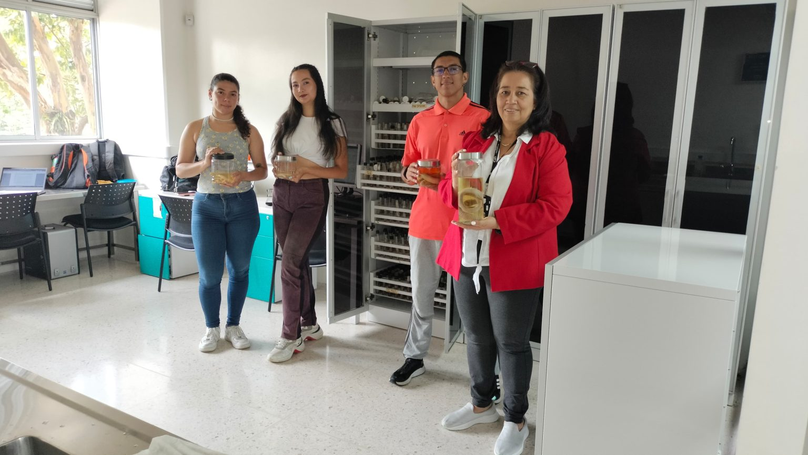

En la Universidad Tecnológica de Pereira hay un legado que sigue vivo en los recuerdos y en la academia; investigaciones y publicaciones guardan el trabajo que por años con dedicación y esmero realizó Alexander Feijóo Martínez. Un legado que sigue vibrando, resonando en las paredes del laboratorio que fundó y en los corazones de quienes compartieron su visión.
María Constanza Zúñiga Torres, docente adscrita desde hace aproximadamente 17 años a la Facultad de Ciencias Ambientales y esposa de Alexander Feijóo, comparte con amor y admiración recuerdos que tejieron su vida juntos, una vida dedicada a la investigación y al legado científico.
La docente ha desarrollado en la universidad diferentes investigaciones y proyectos relacionados con la forma de organización o estrategias de vida de las comunidades rurales, para entender cómo están visibilizadas y cómo se asocian a la dinámica biológica que tienen.